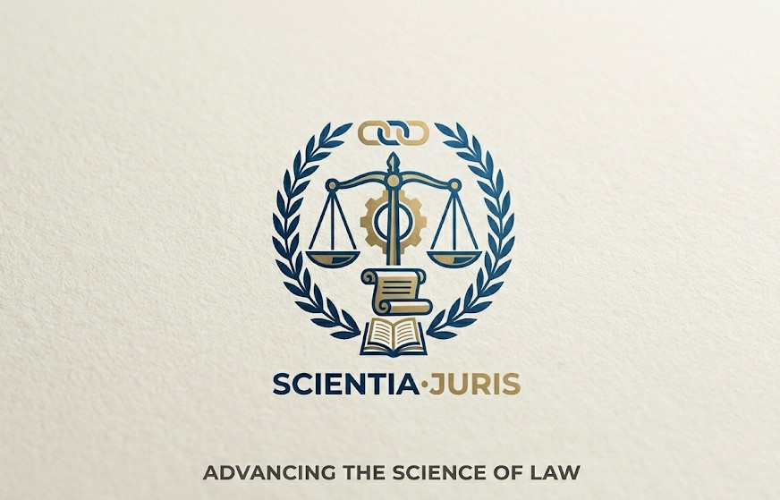

SCIENTIA-JURIS

Changes to rules on reporting serious misconduct
The Bar Standards Board has announced updates regarding the reporting requirements for barristers and chambers to ensure fair standards.
Find out more
About Us
Find out more about Scientia-Juris work, history, vision, and core values.
Legal Education
Learn about laws, legal practices, constitutional rights, and statutory regulations.
Governance & Practice
Explore our organizational structure, guidelines, legal frameworks, and reports.